Ethics of AI Illustrated in Circles
data science
graphics
Highlighting biases entangled with environmental applications of AI

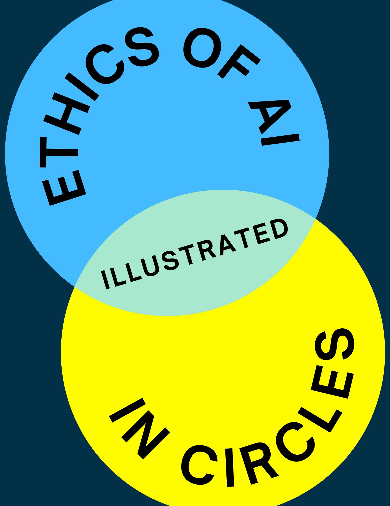
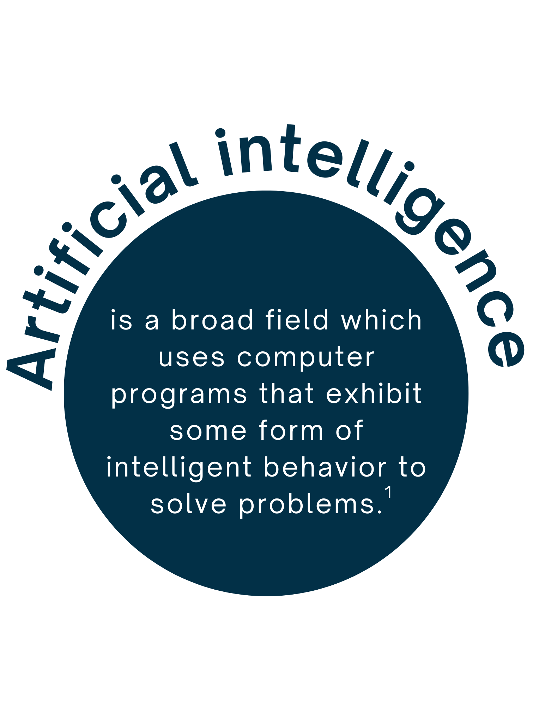
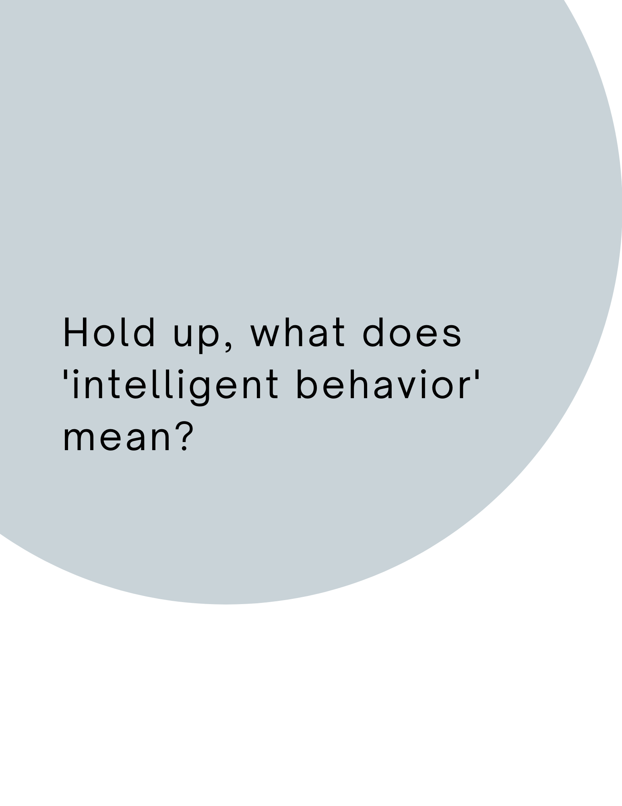


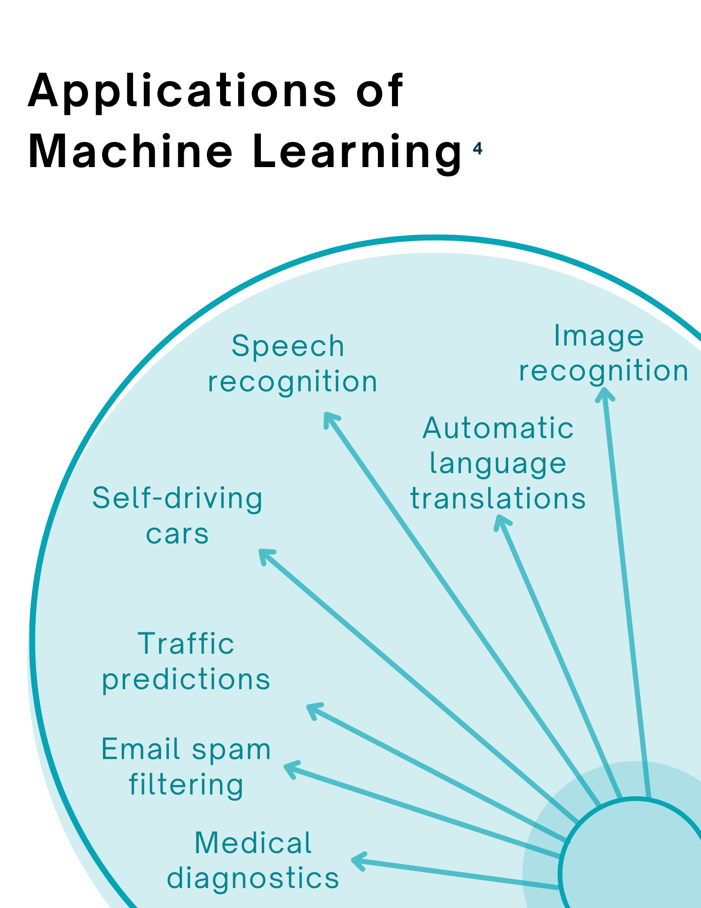
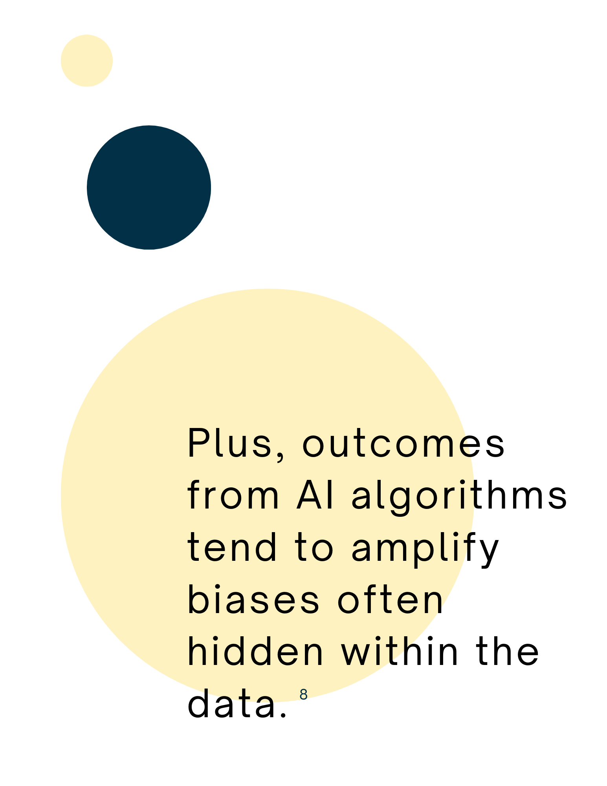
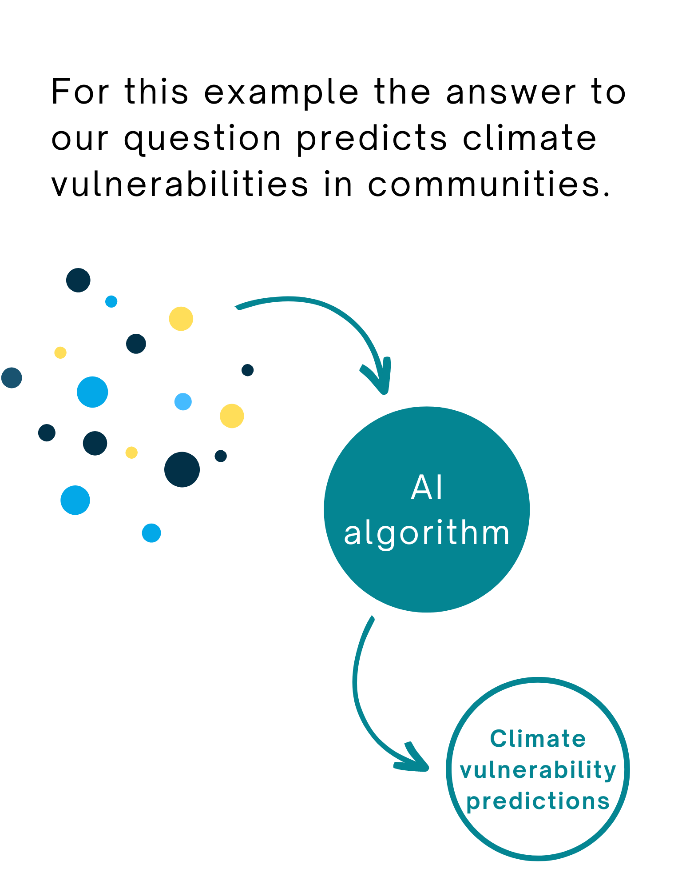
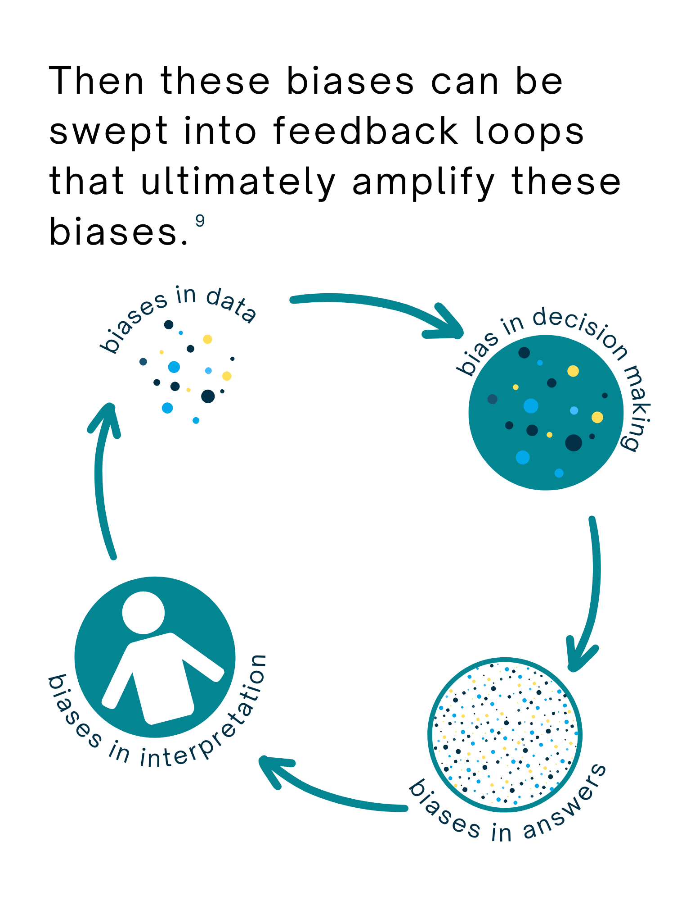
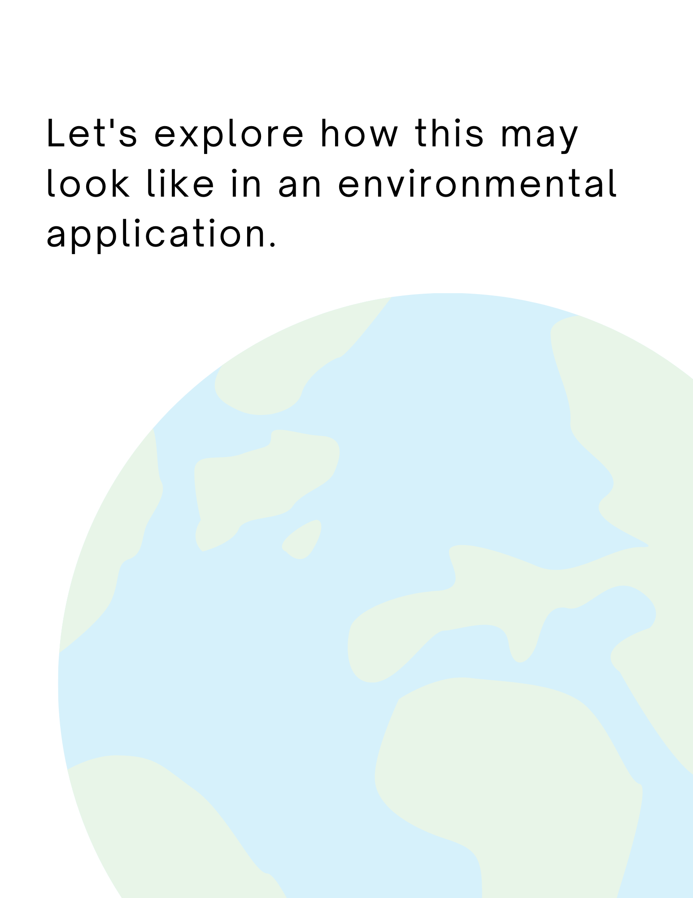
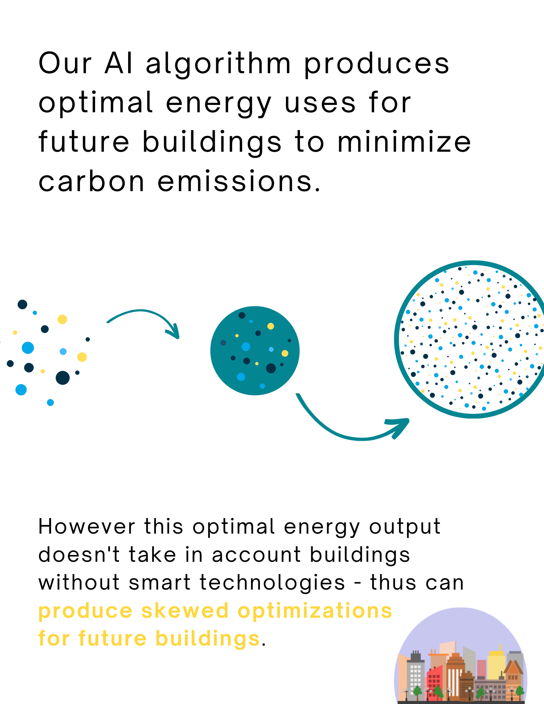
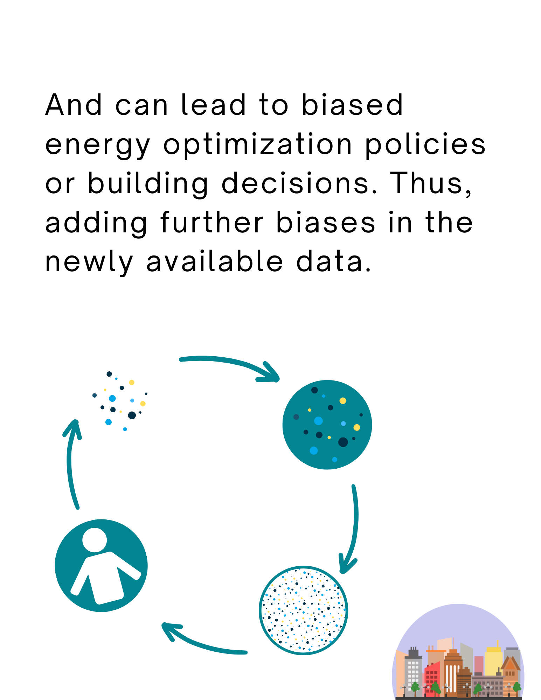
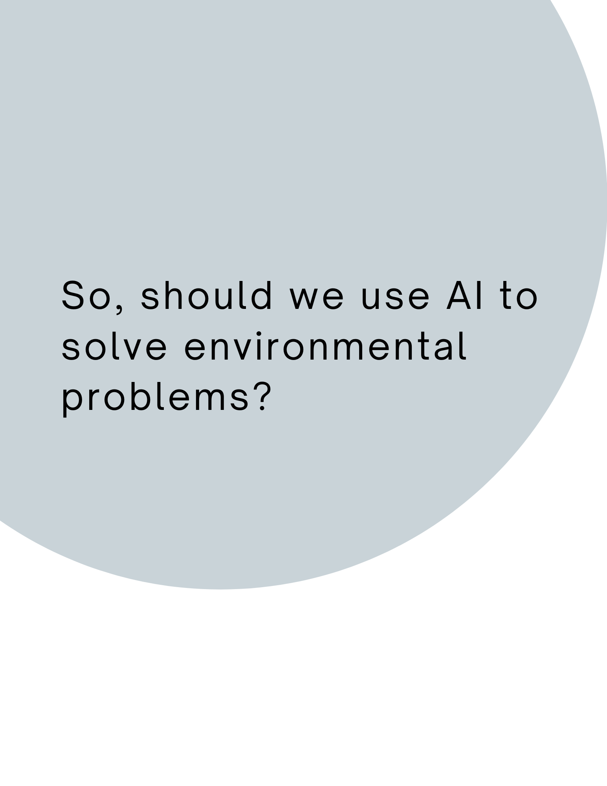
Citation
BibTeX citation:
@online{mccamy2022,
author = {Colleen McCamy},
title = {Ethics of {AI} {Illustrated} in {Circles}},
date = {2022-12-03},
url = {https://colleenmccamy.github.io/2022-12-03-tou-policy-analysis},
langid = {en}
}
For attribution, please cite this work as:
Colleen McCamy. 2022. “Ethics of AI Illustrated in
Circles.” December 3, 2022. https://colleenmccamy.github.io/2022-12-03-tou-policy-analysis.